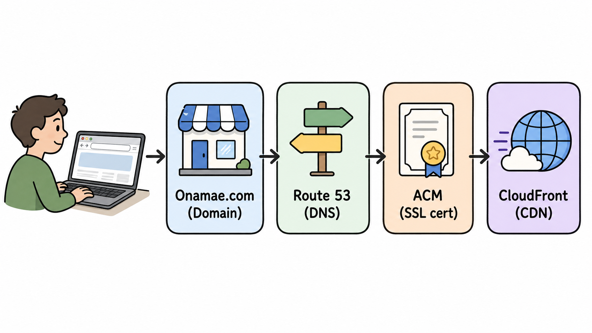
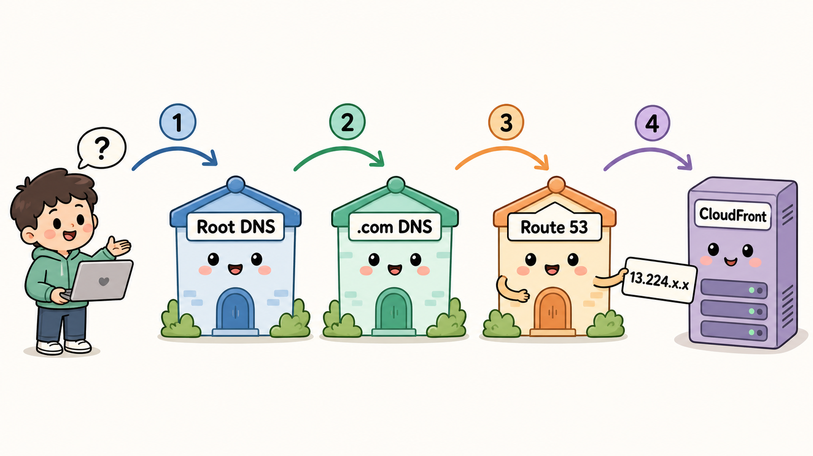
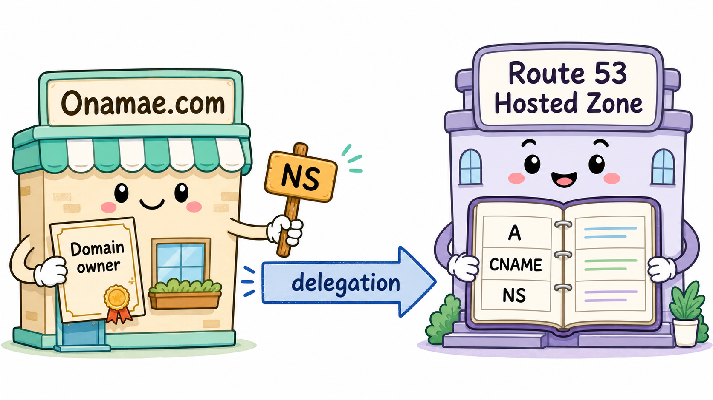
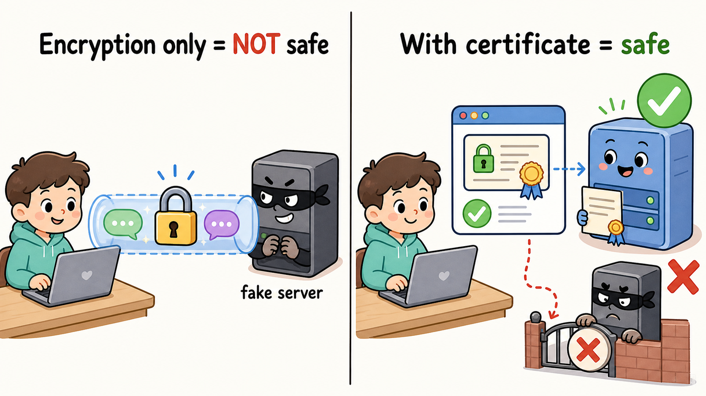
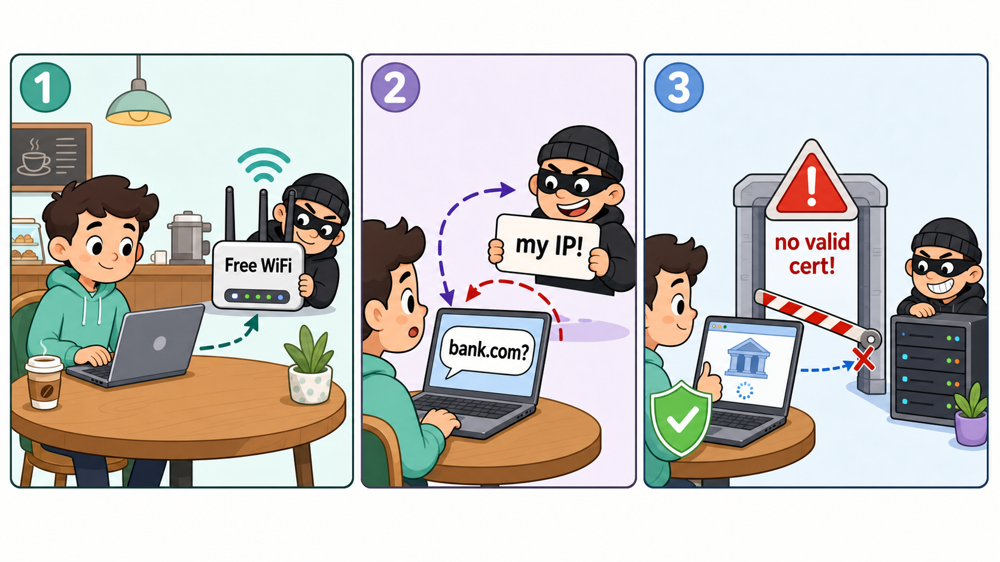
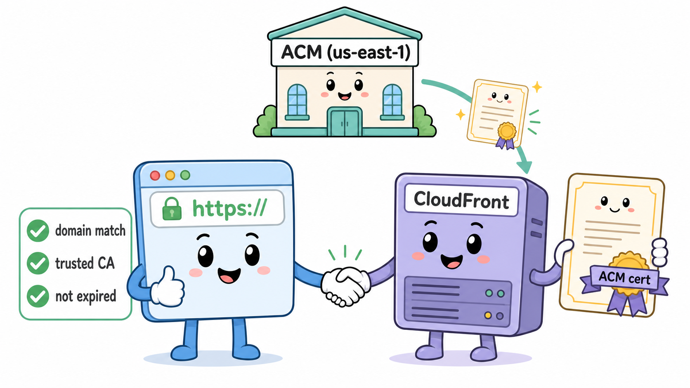
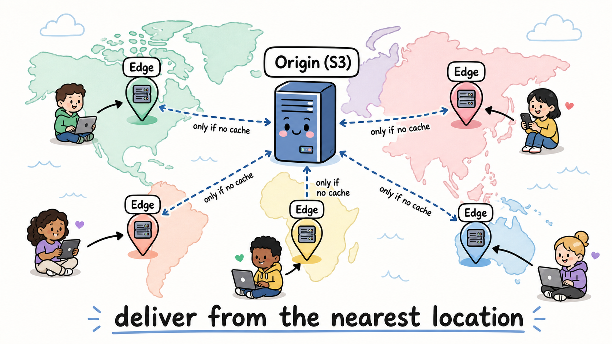
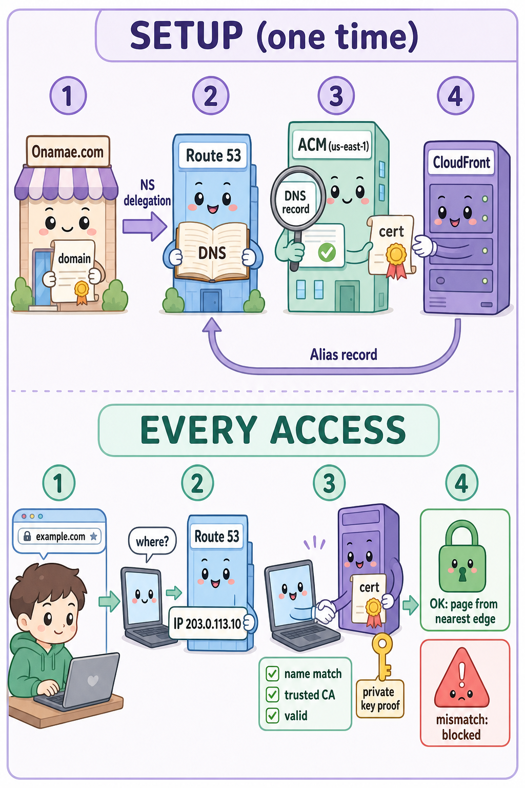

独自ドメインとHTTPSの謎
— 名を名乗る資格の証明 —
独自ドメインでHTTPSのサイトを公開する。言葉にすれば一行だが、その裏側では「名前の登記」「道案内」「本人証明」「配達」という四つの仕事が、それぞれ別の担当者によって遂行されている。本件はその全貌を、予備知識ゼロの読者に向けて記録するものである。

図1 — 事件の全体図。ユーザーの背後で4つの登場人物が連携している
I.登場人物の整理
| 登場人物 | 役割 | 例えるなら |
|---|---|---|
| お名前.com | ドメインを「購入・所有」する場所(レジストラ) | 土地の登記をしてくれる不動産屋 |
| Route 53 | ドメイン名の「案内板」を管理するDNSサービス | 住所を聞かれたら道案内する案内所 |
| ACM | SSL/TLS証明書を無料で発行 | 「本物です」と保証する身分証の発行所 |
| CloudFront | 世界中にコンテンツを高速配信するCDN | 世界中に支店を持つ配達員 |
まるごと一つのたとえ話にするとこうなる。①お名前.comで「店の屋号」を登記した。②「その店はどこ?」と聞かれたときの道案内係はRoute 53に委任した。③「この店は本物」と示す営業許可証(証明書)をACMという役所で発行してもらった。④実際の接客は世界中に支店を持つ配達チェーンCloudFrontが担う。
II.DNSという名の案内人
コンピュータは example.com という名前では通信できない。通信できるのは 13.224.xx.xx のようなIPアドレスだけである。名前から住所への変換を担うのが DNS——世界共通の電話帳だ。

図2 — 名前解決は「道を尋ねる旅」。ルート → .com → Route 53 と辿り、最後にIPアドレスの札を受け取る
ブラウザに名前を打つと、①ルートDNS「.comのことは.comのサーバーに聞け」→ ②.comサーバー「そのドメインはRoute 53に聞け」→ ③Route 53のホストゾーン「それはCloudFrontだ」——と辿られる。②で「Route 53に聞け」と案内されるのは、お名前.com側でネームサーバーをRoute 53のものに変更したから。これを「委任」と呼ぶ。

図3 — 委任。お名前.comは所有の登記のみを保持し、日々の案内台帳(ホストゾーン)はRoute 53が持つ
III.暗号化だけでは、なぜ足りぬのか
HTTPSの仕事は二つある。暗号化(盗み聞きの防止)と本人確認である。そして直感に反するが、暗号化だけでは安全にならない。カフェの偽Wi-Fiに繋いでしまえば、あなたは「偽サーバーと」完璧に暗号化された会話をしてしまう。泥棒と二人きりの密室で丁寧に会話するようなものだ。

図4 — 左:暗号化だけでは泥棒と「安全に」会話してしまう。右:証明書があれば偽物は門前払い
これを防ぐのが証明書である。ブラウザには出荷時から「信頼できる認証局(CA)のリスト」が組み込まれており(Amazonもその一つ)、証明書とは「このドメインの正当なサーバーはこの鍵を持つ」という宣言にCAがデジタル署名したものだ。署名は偽造できないため、偽サーバーは有効な証明書を提示できない。
「案内されているのに、なぜ大丈夫なのか」
ここが本件最大の急所である。ユーザーは実はドメインにアクセスしていない。アクセスの実態は必ず「①誰かに名前→IPを聞く ②教えられたIPに接続する」の二段階であり、その「誰か」(DNSリゾルバ)は接続したWi-Fiが自動で指定してくる。つまり悪意あるネットワーク上では、正しい名前を打っても嘘の住所を教えられ得る。

図5 — 偽Wi-Fi事件の顛末。①偽アクセスポイントに接続 ②「bank.com?」に攻撃者が「私のIPだ」と嘘 ③しかし証明書の門で偽サーバーは阻まれる
だが確認作業を行うのは案内された側ではなく、手元のブラウザ自身である。ブラウザは入力されたドメイン名を「期待値」として持ったまま移動する。案内がどれほど嘘でも、期待値は改竄できない。着いた先で行われるこの照合の儀式をTLSハンドシェイクと呼ぶ。
「私は example.com と打ち込まれてここに案内されてきた。
ならば貴殿は、example.com を名乗る資格があると認証局に証明されたサーバーのはずだ。
証明書を見せたまえ。そして秘密鍵の実演も。」 — ブラウザ君の推理(暗記用の一文)
証明書は公開情報ゆえ、提示だけなら泥棒にも真似できる。そこでブラウザは使い捨ての課題を送り、ペアの秘密鍵での署名をその場で実演させる(秘密鍵の所有証明)。秘密鍵は本物のサーバーから一度も外に出ないため、コピー犯はここで必ず破綻する。

図6 — ACM(us-east-1)が発行した証明書をCloudFrontが提示し、ブラウザが3点(名前一致・信頼できるCA・期限内)を検分する
照合が不合格ならどうなるか
- ページは一切表示されず、データを送る前に接続は切断される(渡るのはSNIの申告程度)
- ブラウザは全画面の警告を出す(
NET::ERR_CERT_COMMON_NAME_INVALID等) - ただし人間は警告を突破できてしまう。「赤い警告が出たら進まない」が唯一のルール
- 警告=攻撃とは限らない。設定ミス・期限切れ・DNS反映待ちの方がむしろ多い。ブラウザは原因を区別できないため一律で止める設計である
IV.CloudFrontという配達網
CloudFrontはCDN——世界中の配信拠点(エッジロケーション)にコンテンツをキャッシュし、ユーザーに最も近い場所から配達する仕組みである。設定は二つ:「代替ドメイン名」に独自ドメインを登録し、「カスタムSSL証明書」にACMの証明書を紐付ける。

図7 — 最寄りの支店(エッジ)から配達。キャッシュが無いときだけ本店(オリジン)へ取りに行く
最後にRoute 53のホストゾーンへエイリアスAレコードを一行。「この名前で来た者はCloudFrontへ案内せよ」。通常のCNAMEと違いルートドメインにも使え、クエリ課金もない、Route 53独自の便法である。
V.事件の再構成 — アクセスの一部始終

図8 — 総括。上段は一度だけ行う設定、下段は毎アクセスごとに繰り返される検証と配信
1. DNS解決 : ルート → .com → (委任により) Route 53 → CloudFrontのIP
2. TLS握手 : 証明書の提示 + 秘密鍵の実演 → 名前一致・信頼CA・期限内 → 🔒
3. 配信 : エッジのキャッシュから即応。無ければオリジンへ
4. 表示 : 事件解決 🎉